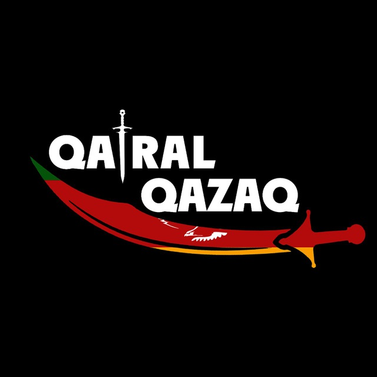

DIGITAL QAZAQ
Тарихи зерттеулер мен ұлттық құндылықтарды қазіргі жастарға түсінікті әрі қолжетімді форматта ұсыну.
LEARN MORE

Тарихи зерттеулер мен ұлттық құндылықтарды қазіргі жастарға түсінікті әрі қолжетімді форматта ұсыну.
LEARN MORE• ХХ ғасыр басындағы қазақ интеллигенциясының қызметін жан-жақты зерттеу
• Алаш зиялыларының саяси, құқықтық және әлеуметтік реформаларын талдау
• Алаш қозғалысына қатысты тарихи фактілерді қызықты әрі түсінікті етіп жеткізу
• Алаш қозғалысын тек тарихи тұрғыдан ғана емес, әдебиет, құқық, саясат, мәдениет және география салаларымен байланыстыра отырып талдау
• TikTok, Instagram, YouTube сияқты әлеуметтік желілерде қысқа бейнероликтер, инфографикалар, подкасттар жасау арқылы тарихи ақпаратты тарату
• Академиялық тілден алшақ, жеңіл, тартымды ақпарат беру. Тарихи өзектілікті көтеру
• Жобаның әлеуметтік желіде жүргізілуі оқырмандармен тікелей диалог жасауға мүмкіндік береді.
• Көрнекті қазақ саяси қайраткері, Алаш қозғалысының жетекшісі, ғалым және публицист. • Қазақ жерінің автономиясы үшін күрескен, 1917 жылы Алаш Орда үкіметін басқарған.
• Ұлт ұстазы, реформатор, лингвист, әдебиетші және Алаш қозғалысының мүшесі. • Қазақ әліпбиін (төте жазу) жасап, халықтың ағартушылық жолында үлкен еңбек сіңірген.
• Алаш қозғалысының қайраткері, ақын, жазушы және публицист. • Оның «Оян, қазақ!» шығармасы халықты ұлттық сананың оянуына шақырды. • Алаш Орда үкіметінің белсенді мүшесі болды.
Qairal Qazaq
Номер: +7 777 777 7777
Instagram: Qairal_qazaq
Telegram-канал: Qq